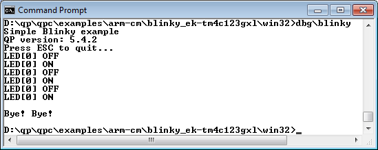

This example implements the Blinky sample application on the EK-TM4C123GLX board (ARM Cortex-M4F).
EK-TM4C123GXL (TivaC LaunchPad)The Blinky example is located in the directory qpc/examples/arm-cm/blinky_ek-tm4c123gxl, which is organized as follows:
qpc/
+-examples/
| +-arm-cm/
| | +-blinky_ek-tm4c123gxl/
| | | +-qk/
| | | | +-armclang/
| | | | | +-blinky-qk.uvprojx
| | | | +-gnu/
| | | | | +-Makefile
| | | | +-iar/
| | | | | +-blinky-qk.eww
| | | | +-bsp.c
| | | +-qv/
| | | | +-armclang/
| | | | | +-blinky-qk.uvprojx
| | | | +-gnu/
| | | | | +-Makefile
| | | | +-iar/
| | | | | +-blinky-qk.eww
| | | | +-bsp.c
Features Demonstrated
- cooperative QV kernel
- with ARM-KEIL toolchain
- with GNU-ARM toolchain
- with IAR-ARM toolchain
- preemptive run-to-completion QK kernel
- with ARM-KEIL toolchain
- with GNU-ARM toolchain
- with IAR-ARM toolchain
- Windows emulation (console multithreaded)
- Windows emulation (console, single threaded: win32-qv)
Running the Example
Once programmed into the board, the example blinks the on-board LED about once a second.
EK-TM4C123GXL (TivaC LaunchPad)
Windows Emulation
The Windows emulation is a simple console application that produces the following output:

Blinky emulation running in a Windows consoleBlinky on EFM32-SLSTK3401A